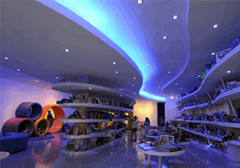
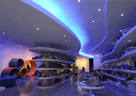

The latest news on design & architecture
Subscribe Now Best ArticlesMost popular posts
 Vanglo House by LWPAC in Canada
Vanglo House by LWPAC in Canada
 Sunrise Expanse Hotel in USA
Sunrise Expanse Hotel in USA
 Stargaze Resort & SPA in USA
Stargaze Resort & SPA in USA
 Royal Blossom Hotel & SPA in USA
Royal Blossom Hotel & SPA in USA
 Sunset Shack Hotel in Spain
Sunset Shack Hotel in Spain
 Glorius Expanse Hotel in France
Glorius Expanse Hotel in France
OUR MOST POPULAR CLIENTS
Top rated

 



Hot news

Prophecy Hotel & Spa in Emirate
Amazing Gabion Ideas for Outdoors A Gabion is a cage box or cylinder filled with rocks, concrete, or sometimes sand and soil and It is a great way to decorate your outdoor. Amazing Gabion Ideas for Outdoors A Gabion is a cage box or cylinder filled with rocks, concrete, or sometimes sand and soil and It is a great way to decorate your outdoor

Nebula hotel in Spain

Western Pyramid Resort in Egypt
Amazing Gabion Ideas for Outdoors A Gabion is a cage box or cylinder filled with rocks, concrete, or sometimes sand and soil and It is a great way to decorate your outdoor. Amazing Gabion Ideas for Outdoors A Gabion is a cage box or cylinder filled with rocks, concrete, or sometimes sand and soil and It is a great way to decorate your outdoor

Grand Meadows Resort in Maldives
Amazing Gabion Ideas for Outdoors A Gabion is a cage box or cylinder filled with rocks, concrete, or sometimes sand and soil and It is a great way to decorate your outdoor. Amazing Gabion Ideas for Outdoors A Gabion is a cage box or cylinder filled with rocks, concrete, or sometimes sand and soil and It is a great way to decorate your outdoor

Wanderlust Resort in Tenerife
Amazing Gabion Ideas for Outdoors A Gabion is a cage box or cylinder filled with rocks, concrete, or sometimes sand and soil and It is a great way to decorate your outdoor. Amazing Gabion Ideas for Outdoors A Gabion is a cage box or cylinder filled with rocks, concrete, or sometimes sand and soil and It is a great way to decorate your outdoor

Twin Sanctuary Hotel in Great Bri-
Amazing Gabion Ideas for Outdoors A Gabion is a cage box or cylinder filled with rocks, concrete, or sometimes sand and soil and It is a great way to decorate your outdoor. Amazing Gabion Ideas for Outdoors A Gabion is a cage box or cylinder filled with rocks, concrete, or sometimes sand and soil and It is a great way to decorate your outdoor

Prism Hotel in Ireland

King's Shroud Resort in Spain
Amazing Gabion Ideas for Outdoors A Gabion is a cage box or cylinder filled with rocks, concrete, or sometimes sand and soil and It is a great way to decorate your outdoor. Amazing Gabion Ideas for Outdoors A Gabion is a cage box or cylinder filled with rocks, concrete, or sometimes sand and soil and It is a great way to decorate your outdoor